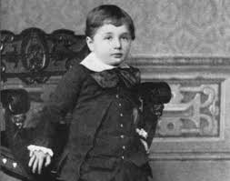
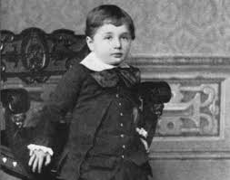

Albert Einstein
was born in German on March 14, 1879, in the southern German city of Ulm, Albert Einstein grew up in a middle-class Jewish family in Munich. As a child, Einstein became fascinated by music (he played the violin), mathematics and science. He dropped out of school in 1894 and moved to Switzerland, where he resumed his schooling and later gained admission to the Swiss Federal Polytechnic Institute in Zurich. In 1896, he renounced his German citizenship, and remained officially stateless before becoming a Swiss citizen in 1901.

 

In the third and most famous article, titled “On the Electrodynamics of Moving Bodies,”
Einstein confronted the apparent contradiction between two principal theories of physics: Isaac Newton’s concepts of absolute space
and time and James Clerk Maxwell’s idea that the speed of light was a constant. To do this, Einstein introduced his special theory of relativity,
which held that the laws of physics are the same even for objects moving in different inertial frames
(i.e. at constant speeds relative to each other), and that the speed of light is a constant in all inertial frames.
A fourth paper concerned the fundamental relationship between mass and energy, concepts viewed previously as completely separate. Einstein’s famous equation
E = mc2
(where “c” was the constant speed of light) expressed this relationship.
Einstein’s parents were secular, middle-class Jews. His father,
Hermann Einstein, was originally a featherbed salesman and later ran an electrochemical factory with moderate success. His mother, the former Pauline Koch,
ran the family household. He had one sister, Maria (who went by the name Maja), born two years after Albert.
Einstein became deeply religious at age 12,
even composing several songs in praise of God and chanting religious songs on the way to school. This began to change, however, after he read science books that contradicted his religious beliefs.
This challenge to established authority left a deep and lasting impression. At the Luitpold Gymnasium, Einstein often felt out of place and victimized by a Prussian-style educational system that
seemed to stifle originality and creativity. One teacher even told him that he would never amount to anything.
Yet another important influence on Einstein was a young medical student,
Max Talmud (later Max Talmey), who often had dinner at the Einstein home. Talmud became an informal tutor, introducing Einstein to higher mathematics and philosophy. A pivotal turning point
occurred when Einstein was 16. Talmud had earlier introduced him to a children’s science series by Aaron Bernstein, Naturwissenschaftliche Volksbucher (1867–68; Popular Books on Physical Science),
in which the author imagined riding alongside electricity that was traveling inside a telegraph wire. Einstein then asked himself the question that would dominate his thinking for the next 10 years:
What would a light beam look like if you could run alongside it? If light were a wave, then the light beam should appear stationary, like a frozen wave. Even as a child, though, he knew that stationary
light waves had never been seen, so there was a paradox. Einstein also wrote his first “scientific paper” at that time (“The Investigation of the State of Aether in Magnetic Fields”).